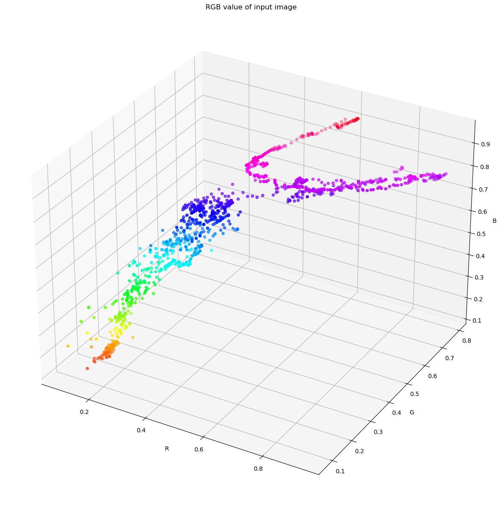
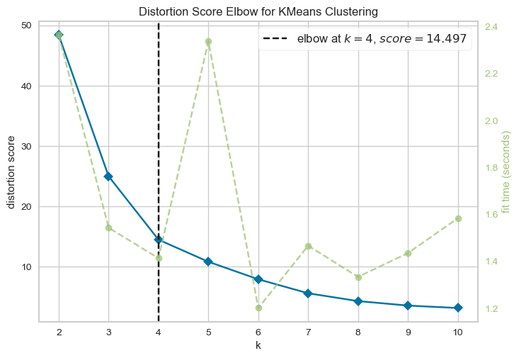
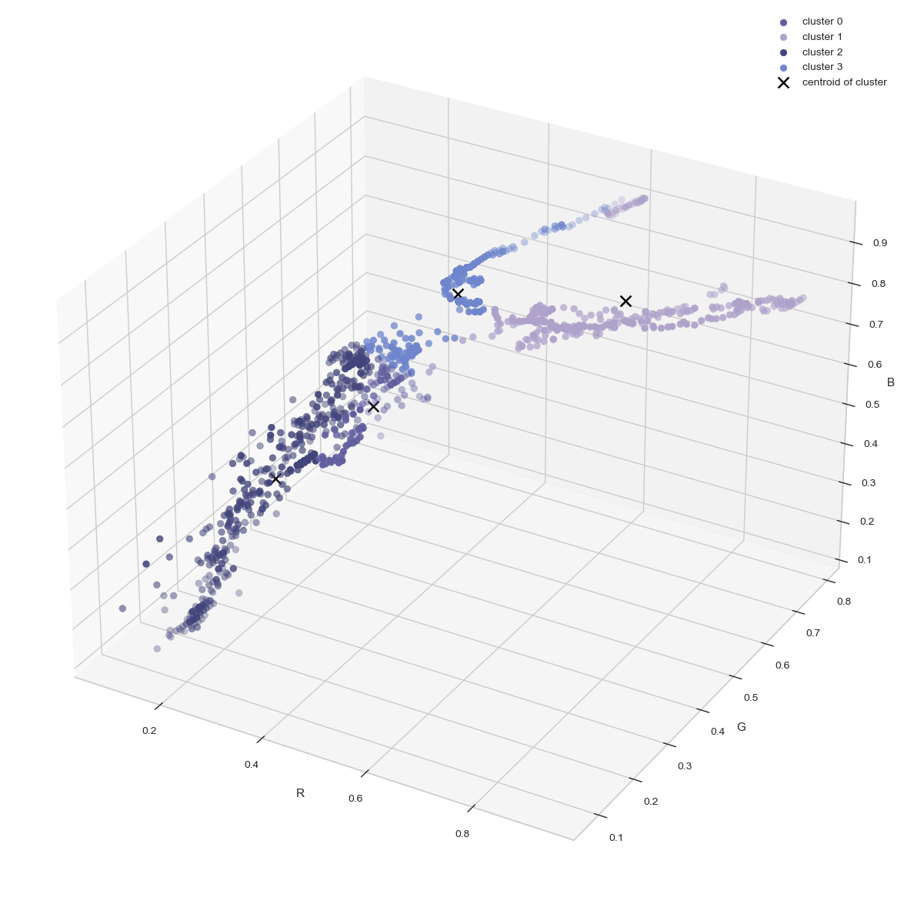
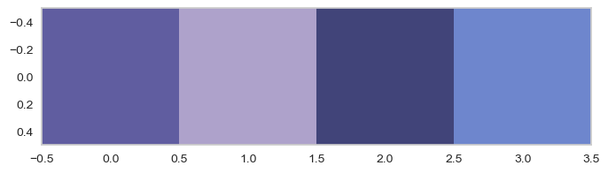
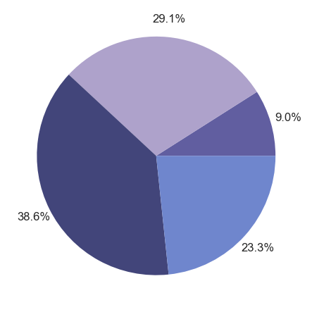

import pandas as pd
import cv2
import numpy as npRGB_values = pd.DataFrame(columns=['R', 'G', 'B'])
image = cv2.imread("beach.jpg")
# get image shape
numPixels = image.shape
print(numPixels)
y, x = numPixels[0], numPixels[1]
for i, j in zip(range(y), range(x)):
BGR_values = image[i, j]
RGB_values.loc[len(RGB_values)] = np.flip(BGR_values)
print(RGB_values)(1200, 1920, 3)
R G B
0 161 195 240
1 161 195 240
2 160 194 239
3 159 193 238
4 159 193 238
... ... ... ...
1195 53 42 58
1196 49 38 55
1197 47 36 53
1198 49 37 57
1199 49 37 57
[1200 rows x 3 columns]# plot the RGB values on a graph
from mpl_toolkits import mplot3d
import matplotlib
import matplotlib.pyplot as plt
%matplotlib inlineRGB_values = RGB_values/255RGB_values.head(5)| R | G | B | |
|---|---|---|---|
| 0 | 0.631373 | 0.764706 | 0.941176 |
| 1 | 0.631373 | 0.764706 | 0.941176 |
| 2 | 0.627451 | 0.760784 | 0.937255 |
| 3 | 0.623529 | 0.756863 | 0.933333 |
| 4 | 0.623529 | 0.756863 | 0.933333 |
import colorsys
RGB_unique = RGB_values.drop_duplicates()
RGB_unique = list(RGB_unique.to_numpy())
RGB_unique.sort(key=lambda rgb: colorsys.rgb_to_hls(*rgb))
cmap_RGB = matplotlib.colors.ListedColormap(RGB_unique, "Colours in the image")
cmap_RGBColours in the image
![Colours in the image colormap]( "Colours in the image")
under
bad
over
fig = plt.figure(figsize = (15,15))
ax = fig.add_subplot(111, projection='3d')
# Data for three-dimensional scattered points
zdata = RGB_values['B']
xdata = RGB_values['R']
ydata = RGB_values['G']
ax.scatter3D(xdata, ydata, zdata, c=zdata, cmap='hsv');
ax.set_xlabel('R')
ax.set_ylabel('G')
ax.set_zlabel('B')
ax.set_title('RGB value of input image');
from sklearn.cluster import KMeansfrom yellowbrick.cluster import KElbowVisualizer
model = KElbowVisualizer(KMeans(), k=(2,10))
model.fit(RGB_values.to_numpy());
model.show();
elbow_value = model.elbow_value_c:\Users\Anu2001\anaconda3\lib\site-packages\sklearn\cluster\_kmeans.py:1412: FutureWarning: The default value of `n_init` will change from 10 to 'auto' in 1.4. Set the value of `n_init` explicitly to suppress the warning
super()._check_params_vs_input(X, default_n_init=10)
c:\Users\Anu2001\anaconda3\lib\site-packages\sklearn\cluster\_kmeans.py:1412: FutureWarning: The default value of `n_init` will change from 10 to 'auto' in 1.4. Set the value of `n_init` explicitly to suppress the warning
super()._check_params_vs_input(X, default_n_init=10)
c:\Users\Anu2001\anaconda3\lib\site-packages\sklearn\cluster\_kmeans.py:1412: FutureWarning: The default value of `n_init` will change from 10 to 'auto' in 1.4. Set the value of `n_init` explicitly to suppress the warning
super()._check_params_vs_input(X, default_n_init=10)
c:\Users\Anu2001\anaconda3\lib\site-packages\sklearn\cluster\_kmeans.py:1412: FutureWarning: The default value of `n_init` will change from 10 to 'auto' in 1.4. Set the value of `n_init` explicitly to suppress the warning
super()._check_params_vs_input(X, default_n_init=10)
c:\Users\Anu2001\anaconda3\lib\site-packages\sklearn\cluster\_kmeans.py:1412: FutureWarning: The default value of `n_init` will change from 10 to 'auto' in 1.4. Set the value of `n_init` explicitly to suppress the warning
super()._check_params_vs_input(X, default_n_init=10)
c:\Users\Anu2001\anaconda3\lib\site-packages\sklearn\cluster\_kmeans.py:1412: FutureWarning: The default value of `n_init` will change from 10 to 'auto' in 1.4. Set the value of `n_init` explicitly to suppress the warning
super()._check_params_vs_input(X, default_n_init=10)
c:\Users\Anu2001\anaconda3\lib\site-packages\sklearn\cluster\_kmeans.py:1412: FutureWarning: The default value of `n_init` will change from 10 to 'auto' in 1.4. Set the value of `n_init` explicitly to suppress the warning
super()._check_params_vs_input(X, default_n_init=10)
c:\Users\Anu2001\anaconda3\lib\site-packages\sklearn\cluster\_kmeans.py:1412: FutureWarning: The default value of `n_init` will change from 10 to 'auto' in 1.4. Set the value of `n_init` explicitly to suppress the warning
super()._check_params_vs_input(X, default_n_init=10)
# using the library
num_clusters = elbow_value
kmeans = KMeans(n_clusters=num_clusters, random_state=0, n_init="auto")
y_clusters = kmeans.fit_predict(RGB_values.to_numpy())import math
import random
x = RGB_values.to_numpy()
centroid1 = x[random.randint(0,len(x))]
centroids = []
centroids.append([centroid1])
numClusters = elbow_value
# pick cluster centroid with probability proportional to the centroid1
distance = [math.dist(centroid1, x[i])**2 for i in range(len(x))]
for i in range(1, numClusters):
# so above has just chosen the highest dist ones, but we still want random choice where the probability is depending on the distance
# also, normalize dists
# calculates probabilities
prob = distance/np.sum(distance)
# choose next centroid with probability proportional to distance squared
new_centroid = x[np.random.choice(range(len(x)), size=1, p=prob)]
centroids.append(new_centroid)
# update distances between newly chosen centroid and other points now
distance = [math.dist(new_centroid[0], x[i])**2 for i in range(len(x))]
centroids = np.array(centroids)
sorted_points = [[] for _ in range(4)]
for point in x:
dists = [math.dist(point, np.squeeze(i)) for i in centroids]
centroid_idx = np.argmin(dists)
sorted_points[centroid_idx].append(point)
# new centroid is mean of the points in each cluster
prev_centroids = centroids[:]
# sorted points is of size num_clusters, num_points in each cluster
centroids = [np.average(i) for i in sorted_points]
centroids = [np.mean(cluster, axis=0) for cluster in sorted_points]
# make sure that none of the centroid values are nan
for points in range(len(centroids)):
if np.isnan(centroids[points]).any():
centroids[points] = prev_centroids[points]colors = []
for i in centroids:
r, g, b = i
colors.append((
r,
g,
b
))
fig = plt.figure(figsize = (15,15))
ax = fig.add_subplot(111, projection='3d')
# plot the sorted clusters
for i in range(len(sorted_points)):
a, b, c = zip(*sorted_points[i])
ax.scatter(a, b, c, s = 40 , color = colors[i], marker = 'o', label = "cluster "+str(i))
label = "centroid of cluster" if i == len(sorted_points)-1 else ""
ax.scatter(colors[i][0], colors[i][1], colors[i][2], s = 100 , marker = 'x', color = [0,0,0], label = label)
ax.set_xlabel('R')
ax.set_ylabel('G')
ax.set_zlabel('B')
ax.legend()
plt.show()
plt.grid(False)
plt.imshow([colors])
plt.show()
total_points = len(RGB_values.to_numpy())
labels = ['Colour' + str(i+1) for i in range(len(colors))]
sizes = [len(sorted_points[i])/total_points for i in range(len(sorted_points))]
fig, ax = plt.subplots()
ax.pie(sizes,
colors=colors, autopct='%1.1f%%', pctdistance=1.15);